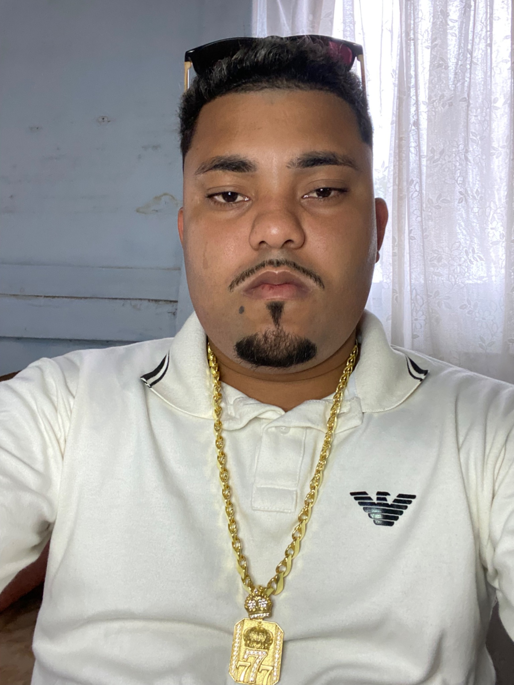

Motoboy & delivery
Conteúdos ligados à rotina de entregas, aplicativos e experiências do trabalho.
Conteúdo sobre a rotina de motoboy, delivery, motos e humor. Este é o espaço oficial para reunir as redes e facilitar o encontro do JV Motoca na internet.

JV Motoca é o nome usado publicamente por um criador de conteúdo digital. Seus perfis apresentam conteúdos relacionados a motoboy, delivery, motos e humor, além de publicações do cotidiano.
Conteúdos ligados à rotina de entregas, aplicativos e experiências do trabalho.
Conteúdo e referências do universo das motocicletas e da vida sobre duas rodas.
Vídeos e publicações de entretenimento para a comunidade que acompanha o perfil.
Acompanhe os vídeos, experiências e publicações do JV Motoca diretamente nas plataformas oficiais.
Para propostas comerciais e parcerias, entre em contato pelo perfil oficial do Instagram.
Falar pelo Instagram